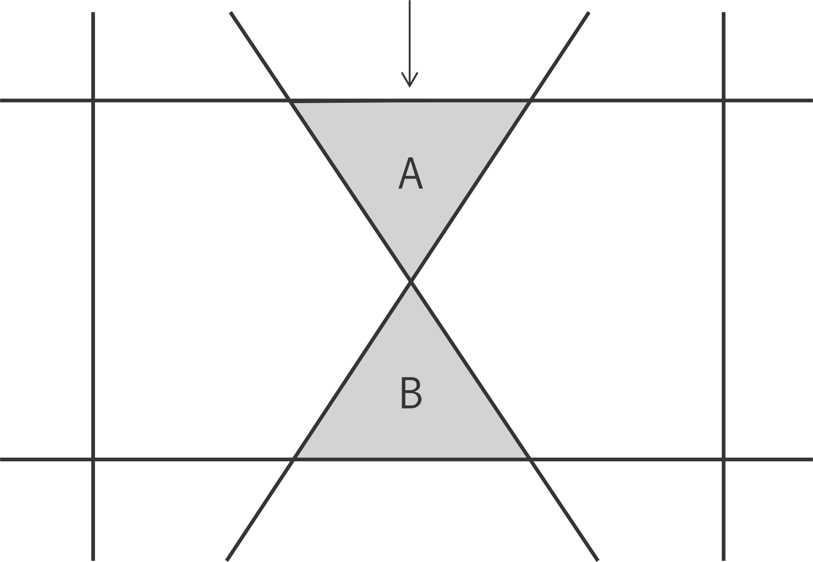

混沌系统的建模
在某些计算中，尤其是涉及不连续材料的计算中，结果可能对初始条件的极小变化或加载顺序的细微变化极其敏感。粗略一看，这种情况似乎不令人满意，并可能被视为不信任计算机模拟的理由。然而，这种敏感性存在于所模拟的物理系统中。这种看似不规则的行为至少有两个来源：
某些不连续面的几何形态会迫使系统在两个备选结果之间（看起来是随机地）做出选择，其后的演化取决于所作的选择。例如，图 1（Figure 1） 显示了节理岩体的一小部分。如果块体 A 被迫相对 B 向下运动，它可以向 B 的左侧或右侧移动。具体选择取决于几何形状、属性或动能方面的微观不规则性。

图 1：节理岩体的一小部分。
系统中存在可描述为“软化”的过程，更一般地可描述为正反馈的情形。在相当均匀的应力场中，小扰动会在随后的演化中被放大，因为应变较大的区域软化得更多，从而吸引更多应变，如此循环，形成正反馈。

两种现象都会产生极端形式下表现为混沌的行为（[Gleick1987]、[Thompson1986]）。对混沌系统的研究表明，此类系统的详细演化是不可预测的，即使在原则上也是如此。所观察到的计算机模型对初始条件或数值因素的微小变化的敏感性，不过反映了现实世界对微小不规则性的类似敏感性。追求越来越“精确”的计算是没有意义的，因为所得到的模型将不能代表现实世界，而现实世界的条件并不完美。面对混沌系统，我们的建模策略应该是什么？看来，对此类模型所能期望的最好结果是有限的行为谱；混沌系统的统计特性是良定义的。我们需要构建包含初始不规则性分布的模型。或许应删除这段，它原先位于前一句末尾（例如，使用 FLAC3D 的 property 命令上的 gauss_dev 或 uniform_dev 参数，或通过特殊 FISH 函数指定给定分布）。每个模型都应使用不同的不规则性分布运行若干次。PFC 在这里是：颗粒集合体在这些条件下，我们可以期望行为波动由所施加的不规则性触发，而不是由数值求解格式的伪影引起。我们可以用统计形式表达结果。
| 这些内容对您有帮助吗？… 版权与免责声明 |
FLAC3D © 2019, Itasca | 原文更新于 2020 年 10 月 8 日 |